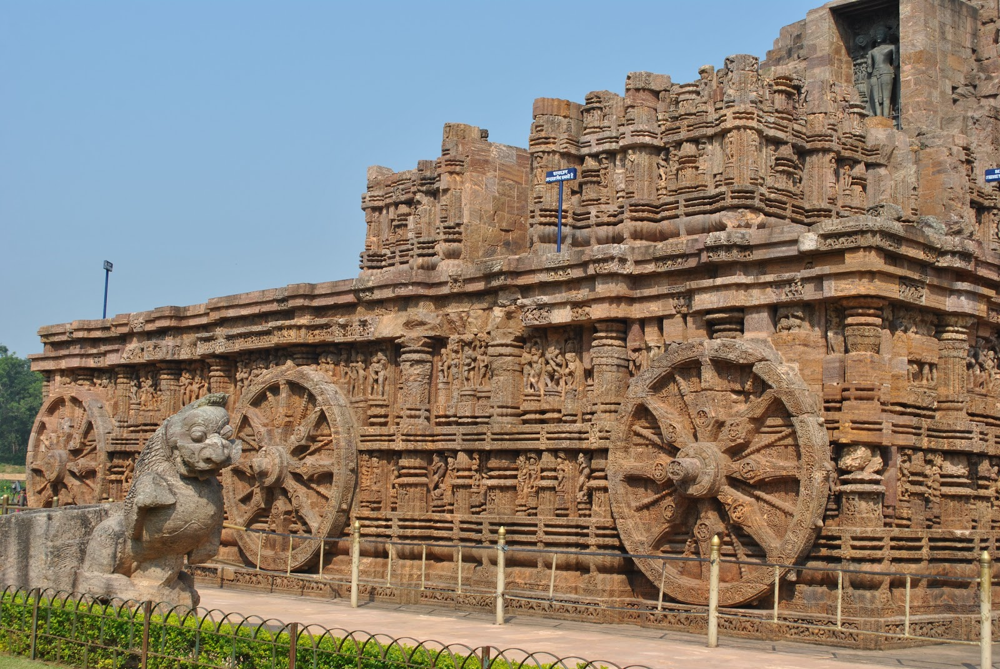

|

|
An Architecture Marvel of Eastern India and A symbol of India's heritage, Konark Sun Temple, commonly known as Konark is situated in the eastern state of Odisha (earlier known as Orissa), India and is one of the eminent tourist attractions. Konark houses a massive temple dedicated to the Sun God. The word 'Konark' is a combination of two words 'Kona' and 'Arka'. 'Kona' means 'Corner' and 'Arka' means 'Sun', so when combines it becomes 'Sun of the Corner'. Konark Sun Temple is situated on the north eastern corner of Puri and is dedicated to Sun God. Konark is also known as Arka khetra. There are three images of the Sun God at three different sides of the temple, positioned in proper direction to catch the rays of the sun at morning, noon and evening.
Sun Temple of Konark, built in the middle of 13th century, is a massive conception of artistic magnificence and engineering dexterity. King Narasimhadeva I, the great ruler of the Ganga dynasty had built this temple, with the help of 1200 artisans within a period of 12 years (1243-1255 A.D.). Since the ruler used to worship the Sun, the temple was considered as a chariot for the Sun God. Konark Temple was designed in the form of a gorgeously decorated chariot mounted on 24 wheels , each about 10 feet in diameter, and drawn by 7 mighty horses. It is really difficult to understand, how this huge temple, every inch-space of which was so wonderfully carved, could have been completed within such a short time. Whatever that might be, the konark temple even in its present ruined state, still a wonder to the whole world. Great poet Rabindranath Tagore wrote of Konark: "here the language of stone surpasses the language of man."
|